If you can count on only one thing, it would be a ruler. Now, don’t get me wrong. I’m not talking about supreme despots for life or anything of that sort. The rulers I’m referring to are the measuring kind. How can you not count on something with so many sequential numbers? That’s why when deciding on the armature for Inchworm Bot, the only thing I could think of was my good, dependable friend, the ruler. After all, “inch” is part of its name, and rulers are covered in inches. In addition, aluminum rulers make great robot parts. Not only are they structurally sound, they’re also easy to cut, drill, and bend. Make your own Inchworm Bot to see for yourself.
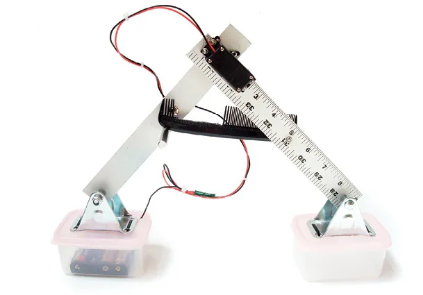
Tools and Supplies
- Continuous-rotation servo motor with the controller removed
- Hacksaw
- A 4 × AA battery holder
- DPDT lever switch
- Four AA batteries
- Red and black wire
- Electrical tape
- An 18-inch aluminum ruler (or longer)
- Two small plastic containers, such as snack or baby food containers
- Two 2-inch fixed casters
- BIC Round Stic pen
- Cutting blade
- Comb
- Ten 4-40 × 1/2-inch nuts and bolts
- Four small washers
- A 2-inch metal standoff
- Four zip ties
- Wire stripper
- Cutting pliers
- Pliers
- Drill
- A 1/8-inch drill bit
- A ¼-inch drill bit
- A 3/16-inch drill bit
- Hammer
- Bench vise
- Screwdriver
- 220-grit sandpaper
- Marker
Inchworm Overview
To make this bot, first modify a continuous-rotation servo for direct drive by removing its controller board (Chapter 4) or use one of the geared motor alternatives, as outlined in Appendix A. The next series of steps in building this bot involves cutting, bending, and drilling the ruler to create two distinct sections. You’ll attach one section of the ruler to the body of the servo motor and the other ruler section to its horn. Once that’s complete, you’ll modify the comb to attach it to the ruler. Next, you’ll attach the DPDT switch, which you’ll wire in an H-bridge configuration to reverse the motor when the lever is pressed. Then you’ll mount a standoff for the comb to rest on so that once the bot is powered up, the comb can move back and forth in order to press the switch. After completing the switch assembly, you’ll attach caster mounts to the plastic container lids to function as the bot’s “feet.” Then you’ll attach the caster mounts to the end of each ruler section. Your final tasks will be to attach the battery holder to the circuit, clean up the wires, and insert the batteries to make the bot go.
Constructing Inchworm
Step 1. Cut the ruler into two 9-inch sections with the hacksaw.
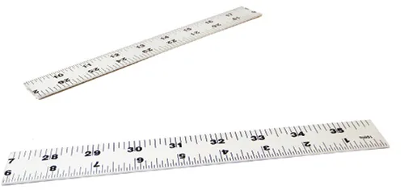
Step 2. On one of the 9-inch sections, make two cuts three-quarters of the way through the ruler at ½ inch from the end and 2 1/8 inches from the same end.
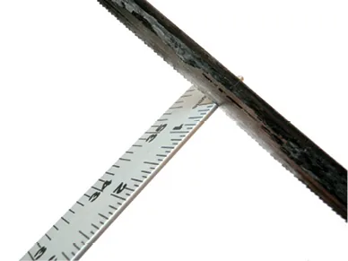
Step 3. Place the ruler in a bench vise so that the bottom of the cuts is level with the top of the vise. Hammer the section between the two cuts flat such that it’s perpendicular to the ruler. This will be your motor mount.
Step 4. Place your servo motor into the slot you just cut, and use a pencil to mark where its mounting holes are.
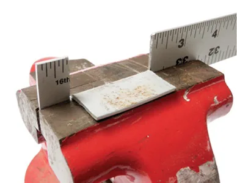
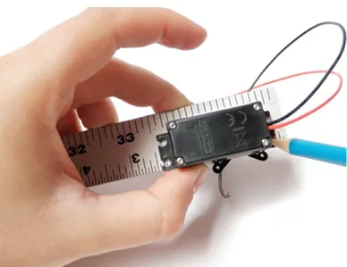
Step 5. Drill through the marks on the ruler with a 1/8-inch drill bit.
Step 6. Drill a ¼-inch hole that is ½ inch from the edge of one of the cut ruler sections. Repeat this for the second section of ruler.
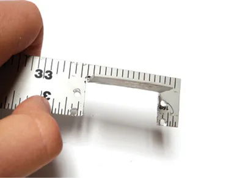
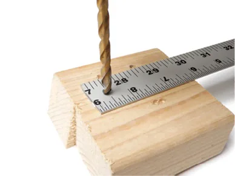
Step 7. Drill a 1/8-inch hole in each end of the servo horn. Detach the servo horn from your servo once you have drilled the holes.
Step 8. Center the servo horn on the section of ruler without the motor mount, roughly 11/4 inch in from the edge of the ruler that has not yet been drilled. Use it as a guide to both mark and drill four 1/8-inch holes through the ruler.
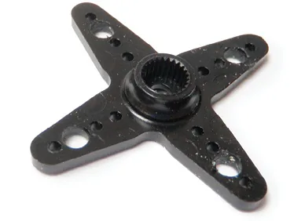
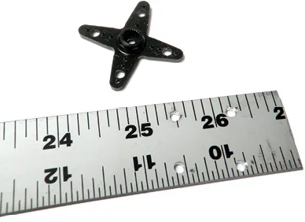
Step 9. Drill a 1/8-inch hole, centered upon the ruler section with the motor mount, that is 5 inches from the edge with the mount.
Drill a 3/16-inch hole into the ruler section with the servo horn mount that is roughly 5 inches from the edge with the servo horn mount and close to the edge of the ruler.
Then, drill a second, larger ¼-inch hole that is 4 inches from the edge with the servo horn mount and centered on the ruler.
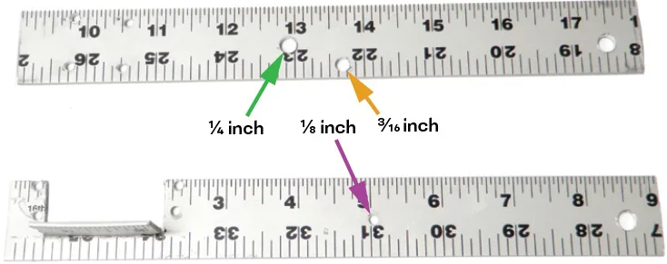
Step 10. Mount the motor to the ruler using nuts and bolts.
Step 11. Reattach the motor horn with its mounting screw.
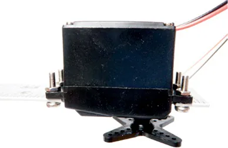
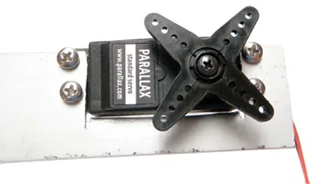
Step 12. Use nuts and bolts to attach the other section of the ruler to the servo horn. The rulers should be able to move back and forth past each other as the motor spins.
Step 13. Use cutting pliers to remove 2 inches’ worth of teeth from one side of your comb, stopping about ½ inch short of the edge. The few remaining teeth on the far edge will act as a safeguard to keep the comb on track.
When you’re done removing teeth, sand that section of the comb smooth and then drill a 1/8-inch hole on the opposite edge.
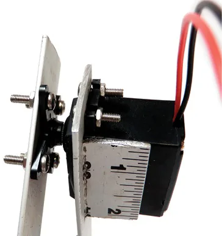
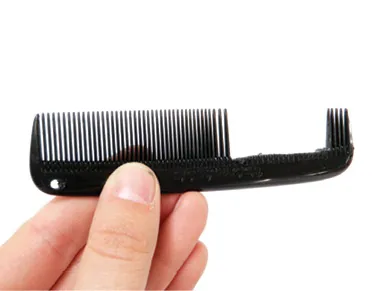
Step 14. Pass a bolt through the hole in the comb and then place two to four washers on it. The point of these washers is to push the comb toward the other section of ruler (once mounted).
Next, pass the screw through the middle hole in the section of the ruler with the motor. Use your bolt to fasten it securely in place.
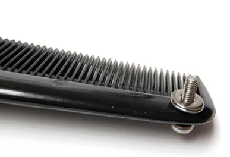
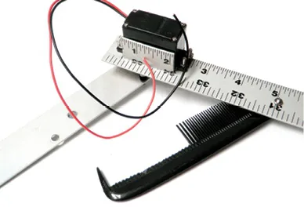
Step 15. Position one of your switch’s mounting nuts about ¼ inch from the bottom of the switch’s threads.
Next, insert the DPDT switch into the ¼-inch hole that you drilled in the ruler in step 9.
Finally, lock the switch in place with its second mounting nut. The lever should now be about flush with the face of the ruler.
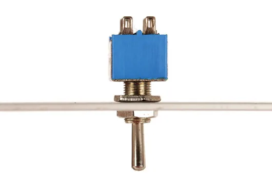
Step 16. Wire together the opposite corners of the DPDT switch. Solder a long red battery wire to one of the center DPDT switch pins and a long black wire to the other. You’ll eventually connect them to the battery holder.
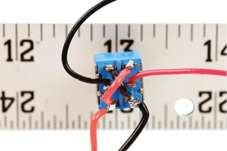
Turn the switch so that only two pins are facing you (as opposed to three). Solder the black motor wire to the DPDT pin closest to you on the right. Solder the red motor wire to the other pin on the left.
Step 17. Mount the standoff to the servo horn section of the ruler such that it is facing inward in the same direction as the lever switch. The comb will rest on top of the standoff.
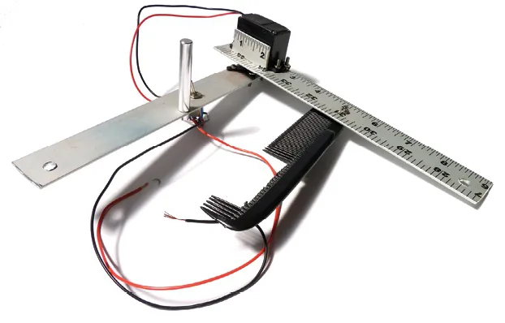
Step 18. Now that you’ve assembled the body, you’ll construct the inchworm’s “feet.” Take your two casters and remove the wheels. For many casters, this just means unscrewing a nut. However, if the wheels are riveted, you may need to drill through the rivet to remove them.
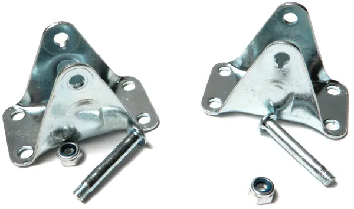
Step 19. For each plastic container and caster mount pair, center the caster mount on top of the plastic container. Use the holes in the caster mount as guides for drilling 1/8-inch holes in the lid of the container.
Step 20. Zip-tie the caster frames in place to create pivots.
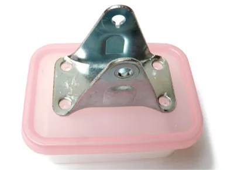
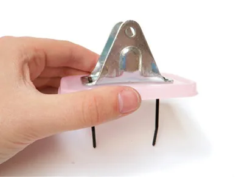
Step 21. Drill a 1/8-inch hole in the corner of one of the container lids.
Step 22. Place the battery holder inside and pass the power wires through the hole.
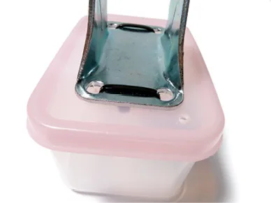
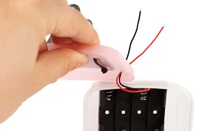
Step 23. Take your ballpoint pen and remove the ink cartridge, such that you’re left with a hollow tube. With a cutting blade (such as a box cutter), cut the tube to create two 1-inch sections. Cut those two sections in half, creating four ½-inch spacers. Alternatively, you can buy four ½-inch spacers from the hardware store.
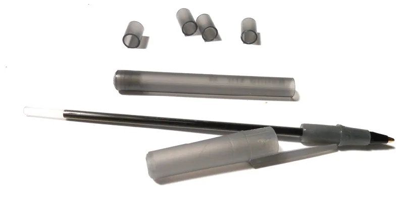
Step 24. Reusing the caster’s wheel mounting hardware, attach the rulers to the caster mounts using the cut pen spacers on each side of the rulers. If a ruler seems loose or tipsy, insert metal washers between the spacer and the ruler until it’s no longer loose.
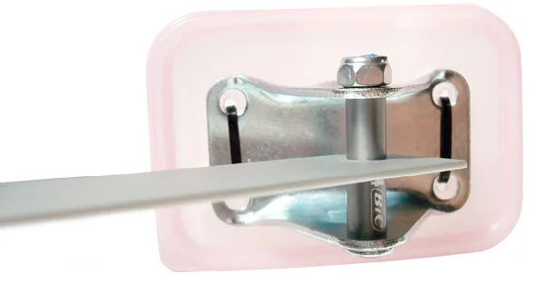
Step 25. Solder the red wire from the switch to the red wire from the battery holder. Solder the black wire from the switch to the black wire from the battery holder.
Step 26. Cover the exposed connections in shrink tube to prevent the wires from shorting on the metal frame.
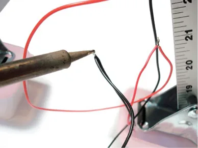
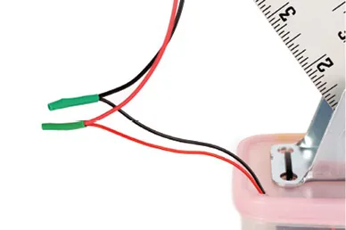
Step 27. Zip-tie all the loose wires together to prevent entanglement.
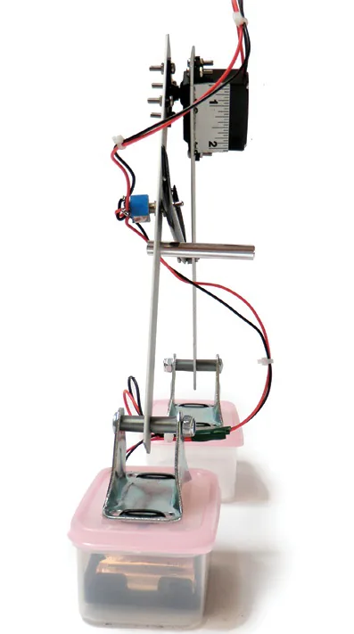
Step 28. Insert some batteries and quickly close the plastic container lid to make the bot go.